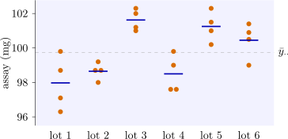

11.2 The one-way random effects model
Definition 11.2.1. In the one-way random effects model \[ y_{ij} = \mu + \tau _i + \varepsilon _{ij} , \qquad i = 1, \dots , t , \quad j = 1, \dots , r , \] \(\mu \) is a constant, the \(\tau _i\) are independent \(N(0, \sigma ^2_\tau )\), the \(\varepsilon _{ij}\) are independent \(N(0, \sigma ^2)\), and the \(\tau _i\) are independent of the \(\varepsilon _{ij}\). The parameters \(\sigma ^2_\tau \) and \(\sigma ^2\) are the variance components.
The model has a consequence that the fixed effects model does not: observations on the same level are correlated. Indeed \begin {gather*} \Var (y_{ij}) = \sigma ^2_\tau + \sigma ^2 , \qquad \Cov (y_{ij}, y_{ij'}) = \Var (\tau _i) = \sigma ^2_\tau \quad (j \ne j') , \\ \Cov (y_{ij}, y_{i'j'}) = 0 \quad (i \ne i') , \end {gather*} so two observations on the same level have correlation \[ \rho = \frac {\sigma ^2_\tau }{\sigma ^2_\tau + \sigma ^2} , \] the intraclass correlation. It is also the fraction of the variance of a single observation that is due to the factor.
The sums of squares are computed exactly as in the fixed effects case: \(SST = SS_{\mathrm {Treatments}} + SSE\), with \(N = tr\) observations. What changes is their expectations.
Theorem 11.2.2. In the one-way random effects model, \[ E(MS_{\mathrm {Treatments}}) = \sigma ^2 + r\sigma ^2_\tau , \qquad E(MSE) = \sigma ^2 . \] Moreover \(SSE/\sigma ^2 \sim \chi ^2_{N-t}\) and \(SS_{\mathrm {Treatments}}/(\sigma ^2 + r\sigma ^2_\tau ) \sim \chi ^2_{t-1}\), and the two are independent.
Proof. The expectations follow from the computing formulas. Since \(y_{i\cdot } = r\mu + r\tau _i + \varepsilon _{i\cdot }\) and \(y_{\cdot \cdot } = N\mu + r\sum _i\tau _i + \varepsilon _{\cdot \cdot }\), with all terms independent and the random ones of mean zero, \begin {align*} E(y_{ij}^2) &= \mu ^2 + \sigma ^2_\tau + \sigma ^2 , \\ E(y_{i\cdot }^2) &= r^2\mu ^2 + r^2\sigma ^2_\tau + r\sigma ^2 , \\ E(y_{\cdot \cdot }^2) &= N^2\mu ^2 + r^2t\sigma ^2_\tau + N\sigma ^2 . \end {align*}
Hence \begin {align*} E(SS_{\mathrm {Treatments}}) &= \sum _{i=1}^t\frac {E(y_{i\cdot }^2)}r - \frac {E(y_{\cdot \cdot }^2)}N \\ &= (N\mu ^2 + N\sigma ^2_\tau + t\sigma ^2) - (N\mu ^2 + r\sigma ^2_\tau + \sigma ^2) \\ &= (t - 1)(\sigma ^2 + r\sigma ^2_\tau ) , \end {align*}
using \(N = tr\), and \begin {align*} E(SSE) &= \sum _i\sum _jE(y_{ij}^2) - \sum _i\frac {E(y_{i\cdot }^2)}r \\ &= (N\mu ^2 + N\sigma ^2_\tau + N\sigma ^2) - (N\mu ^2 + N\sigma ^2_\tau + t\sigma ^2) = (N - t)\sigma ^2 . \end {align*}
Dividing by the degrees of freedom gives the expected mean squares.
For the distributions, note first that \(y_{ij} - \bar y_{i\cdot } = \varepsilon _{ij} - \bar \varepsilon _{i\cdot }\) does not involve \(\tau _i\). For each \(i\), \(\sum _j(\varepsilon _{ij} - \bar \varepsilon _{i\cdot })^2/\sigma ^2 \sim \chi ^2_{r-1}\) and is independent of \(\bar \varepsilon _{i\cdot }\), the sample variance and mean of a normal sample being independent. Summing over the independent levels, \(SSE/\sigma ^2 \sim \chi ^2_{t(r-1)}\), and \(SSE\) is independent of \((\tau _1, \bar \varepsilon _{1\cdot }, \dots , \tau _t, \bar \varepsilon _{t\cdot })\). Next, the level means \[ \bar y_{i\cdot } = \mu + \tau _i + \bar \varepsilon _{i\cdot } \] are independent \(N(\mu , \sigma ^2_\tau + \sigma ^2/r)\), so their sample variance satisfies \(\sum _i(\bar y_{i\cdot } - \bar y_{\cdot \cdot })^2/(\sigma ^2_\tau + \sigma ^2/r) \sim \chi ^2_{t-1}\). Multiplying numerator and denominator by \(r\) gives the distribution of \(SS_{\mathrm {Treatments}}\), which is a function of the \(\tau _i\) and \(\bar \varepsilon _{i\cdot }\) and so independent of \(SSE\). □
The test
The hypothesis that the factor contributes no variability is \(H_0 : \sigma ^2_\tau = 0\), against \(H_1 : \sigma ^2_\tau > 0\). By the theorem, with \(\theta = \sigma ^2_\tau /\sigma ^2\), \[ \frac {F_0}{1 + r\theta } \sim F_{t-1, N-t} , \qquad F_0 = \frac {MS_{\mathrm {Treatments}}}{MSE} . \] Under \(H_0\) this is the usual \(F\) statistic, so the test is computed exactly as for fixed effects: reject when \(F_0 > F_{\alpha , t-1, N-t}\). The power is different, and simpler: under the alternative the statistic is a multiple of a central \(F\), so \[ \text {power} = P\bigl (F_{t-1, N-t} > F_{\alpha , t-1, N-t}/(1 + r\theta )\bigr ) , \] with no noncentrality parameter needed.
Estimating the variance components
Equating the mean squares to their expectations gives the analysis of variance estimators \[ \hat \sigma ^2 = MSE , \qquad \hat \sigma ^2_\tau = \frac {MS_{\mathrm {Treatments}} - MSE}r . \] Both are unbiased, and for balanced data under normality they have minimum variance among all unbiased estimators. But \(\hat \sigma ^2_\tau \) is negative whenever \(F_0 < 1\), which by the pivot above has probability \[ P\bigl (F_{t-1, N-t} < 1/(1 + r\theta )\bigr ) , \] more than one half when \(\sigma ^2_\tau = 0\). A negative estimate is not an arithmetic error. It is evidence that \(\sigma ^2_\tau \) is small, and the usual practice is to report \(\hat \sigma ^2_\tau = 0\) (which makes the estimator biased) and to check that the model is right. The restricted maximum likelihood (REML) estimator, which is the standard method for unbalanced data, agrees with the analysis of variance estimator for balanced data whenever the latter is non-negative, and otherwise sets \(\hat \sigma ^2_\tau = 0\).
Confidence intervals
Three intervals are exact. Since \(SSE/\sigma ^2 \sim \chi ^2_{N-t}\), \[ \frac {SSE}{\chi ^2_{\alpha /2, N-t}} \le \sigma ^2 \le \frac {SSE}{\chi ^2_{1-\alpha /2, N-t}} , \] where \(\chi ^2_{\alpha , \nu }\) is the upper \(\alpha \) point. The pivot \(F_0/(1 + r\theta )\) gives an interval \([L, U]\) for the ratio \(\theta \): \[ L = \frac 1r\Bigl (\frac {F_0}{F_{\alpha /2, t-1, N-t}} - 1\Bigr ) , \qquad U = \frac 1r\Bigl (\frac {F_0}{F_{1-\alpha /2, t-1, N-t}} - 1\Bigr ) , \] and since \(\rho = \theta /(1 + \theta )\) is increasing in \(\theta \), \([L/(1 + L), U/(1 + U)]\) is an exact interval for the intraclass correlation. There is no exact interval for \(\sigma ^2_\tau \) itself, because its estimator is a difference of mean squares with different expectations. The standard approximation is the following.
Proposition 11.2.3 (Satterthwaite). Let \(MS_1\), \(MS_2\), …, \(MS_m\) be independent mean squares such that \(\nu _iMS_i/E(MS_i)\) is \(\chi ^2_{\nu _i}\) for each \(i\), and let \(\hat \psi = \sum _ic_iMS_i\) for constants \(c_i\). Then \(\nu \hat \psi /\psi \), with \(\psi = E(\hat \psi )\), has the mean \(\nu \) and the variance \(2\nu \) of a \(\chi ^2_\nu \) variable when \[ \nu = \frac {\bigl (\sum _ic_iE(MS_i)\bigr )^2}{\sum _ic_i^2E(MS_i)^2/\nu _i} , \qquad \text {estimated by} \qquad \hat \nu = \frac {\bigl (\sum _ic_iMS_i\bigr )^2}{\sum _ic_i^2MS_i^2/\nu _i} . \]
Proof. The mean is clearly \(\nu \). A \(\chi ^2_{\nu _i}\) variable has variance \(2\nu _i\), so \(\Var (MS_i) = 2E(MS_i)^2/\nu _i\), and by independence \[ \Var (\nu \hat \psi /\psi ) = \frac {\nu ^2}{\psi ^2}\sum _ic_i^2\,\frac {2E(MS_i)^2}{\nu _i} . \] Setting this equal to \(2\nu \) and solving gives the stated \(\nu \). □
Treating \(\hat \nu \hat \psi /\psi \) as \(\chi ^2_{\hat \nu }\) gives the approximate interval \(\hat \nu \hat \psi /\chi ^2_{\alpha /2, \hat \nu } \le \psi \le \hat \nu \hat \psi /\chi ^2_{1-\alpha /2, \hat \nu }\). The approximation is good when all \(c_i > 0\); with negative coefficients, as here, it is rougher, but it remains the usual choice.
Example 11.2.4. A tablet manufacturer receives its active ingredient in lots, and wants to know how much of the variation in tablet strength comes from differences between lots. Six lots were chosen at random from the supplier’s stock, and four tablets from each were assayed (mg of active ingredient):
| lot | total | ||||
| \(1\) | \(96.3\) | \(98.7\) | \(97.1\) | \(99.8\) | \(391.9\) |
| \(2\) | \(99.2\) | \(98.0\) | \(98.7\) | \(98.7\) | \(394.6\) |
| \(3\) | \(101.0\) | \(102.0\) | \(101.2\) | \(102.3\) | \(406.5\) |
| \(4\) | \(99.8\) | \(99.0\) | \(97.6\) | \(97.6\) | \(394.0\) |
| \(5\) | \(101.0\) | \(101.5\) | \(102.3\) | \(100.2\) | \(405.0\) |
| \(6\) | \(101.4\) | \(100.5\) | \(100.9\) | \(99.0\) | \(401.8\) |
Here \(t = 6\), \(r = 4\), \(N = 24\), \(y_{\cdot \cdot } = 2393.8\) and \(\sum y_{ij}^2 = 238828.74\), so with \(C = 2393.8^2/24 = 238761.6017\), \begin {gather*} SST = 238828.74 - C = 67.1383 , \\ SS_{\mathrm {Lots}} = \frac {391.9^2 + \dots + 401.8^2}4 - C = 48.7133 , \\ SSE = 67.1383 - 48.7133 = 18.4250 . \end {gather*}
| source | SS | df | MS | \(F_0\) |
| lots | \(48.713\) | \(5\) | \(9.743\) | \(9.52\) |
| error | \(18.425\) | \(18\) | \(1.024\) | |
| total | \(67.138\) | \(23\) |
Since \(F_{0.05, 5, 18} = 2.77\) (\(P = 0.0001\)), \(H_0 : \sigma ^2_\tau = 0\) is rejected: lots differ. The estimates are \begin {gather*} \hat \sigma ^2 = 1.024 , \qquad \hat \sigma ^2_\tau = \frac {9.743 - 1.024}4 = 2.180 , \\ \hat \rho = \frac {2.180}{2.180 + 1.024} = 0.68 . \end {gather*} So about two thirds of the variance of a single tablet, \(\hat \sigma ^2_\tau + \hat \sigma ^2 = 3.20\), is due to lots (Figure 13).
The \(95\%\) interval for \(\sigma ^2\) uses \(\chi ^2_{0.025, 18} = 31.53\) and \(\chi ^2_{0.975, 18} = 8.23\): \(18.425/31.53 \le \sigma ^2 \le 18.425/8.23\), that is \((0.58, 2.24)\). For the ratio, \(F_{0.025, 5, 18} = 3.382\) and \(F_{0.975, 5, 18} = 0.1572\), so \begin {align*} L &= \tfrac 14(9.518/3.382 - 1) = 0.454 , \\ U &= \tfrac 14(9.518/0.1572 - 1) = 14.89 , \end {align*}
and the intraclass correlation lies in \((0.31, 0.94)\). For \(\sigma ^2_\tau \), with \(c_1 = \frac 14\) and \(c_2 = -\frac 14\), \[ \hat \nu = \frac {(4\times 2.180)^2}{9.743^2/5 + 1.024^2/18} = 3.99 \approx 4 , \] and with \(\chi ^2_{0.025, 4} = 11.14\) and \(\chi ^2_{0.975, 4} = 0.484\) the approximate interval is \((4\times 2.180/11.14,\ 4\times 2.180/0.484) = (0.78, 18.0)\).
The interval for \(\sigma ^2_\tau \) is very wide, because it rests on only five degrees of freedom: six lots give little information about a population of lots, however many tablets are assayed from each. To estimate \(\sigma ^2_\tau \) better, the manufacturer must sample more lots.

Remark. For unequal numbers \(n_i\) per level, \(E(MSE) = \sigma ^2\) still, but \(E(MS_{\mathrm {Treatments}}) = \sigma ^2 + n_0\sigma ^2_\tau \) with \[ n_0 = \frac 1{t - 1}\Bigl (N - \frac {\sum _in_i^2}N\Bigr ) , \] and \(SS_{\mathrm {Treatments}}\) is no longer a multiple of a \(\chi ^2\) variable (Problem 11.6.2). For unbalanced data REML is the method of choice.
Questions on this section
Stuck on something here? Ask below and it stays attached to this topic.